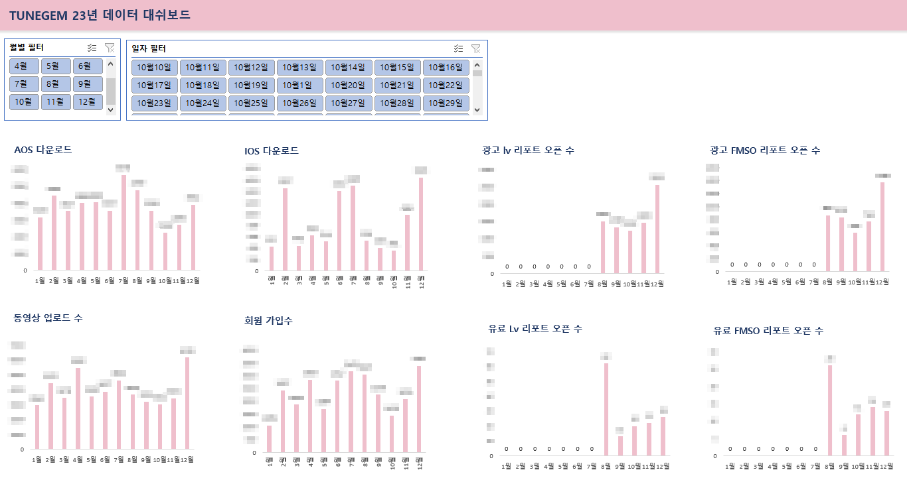

Himitsuchat의 그로스 지표는 “활성 사용자 수” 하나로 묶여 있었습니다. 한 번 들어와 몇 마디 나눈 사용자와 캐릭터와 깊게 대화하는 사용자가 같은 숫자로 집계돼, 누가 서비스에 실제로 빠져드는지 구분할 수 없었습니다. 무료 챗을 다 쓴 순간, 결제 직전의 가장 중요한 시점도 데이터에 남지 않았습니다.
설계한 이벤트
활성 사용자 분류
가벼운 활성 · 깊은 활성채팅 수를 기준으로 활성 사용자를 두 단계로 나누는 분류 이벤트를 별도로 만들었습니다. 같은 “활성”이라도 몰입 수준이 다른 사용자를 따로 볼 수 있게 했습니다.
quota_reached
무료 챗 소진 시점 기록무료 챗을 모두 쓴 순간 이벤트가 남도록 설계했습니다. 소진 직후 사용자가 결제로 가는지, 이탈하는지, 다음 날 돌아오는지를 추적할 수 있게 했습니다.
이 이벤트로 얻은 것
병목을 숫자로 짚을 수 있게 됐습니다. 유입, 첫 채팅, 깊은 활성, 한도 도달, 결제가 하나의 퍼널로 이어지면서 “어디서 사용자가 멈추는가”를 감이 아니라 단계별 전환율로 말할 수 있게 됐습니다. 그 결과 방문자 중 첫 채팅을 시작하는 비율이 약 22%에 그친다는 핵심 병목을 찾았습니다.
결제 직전 단계를 처음으로 측정했습니다. 무료 한도에 닿는 사용자가 곧 결제 후보군입니다. quota_reached가 생기면서 결제 퍼널의 입구 크기를 매일 확인할 수 있게 됐고, 한도 도달 사용자가 기대보다 훨씬 적다는 사실도 이 지표로 드러났습니다.
개선의 효과를 같은 기준으로 비교할 수 있게 됐습니다. 제품을 바꾸기 전에 기준선을 잡아둔 덕분에, 이후 출시한 개선이 첫 채팅과 한도 도달을 얼마나 바꿨는지 전후로 검증할 수 있었습니다.
사용자 단계별로 다른 전략을 세울 수 있게 됐습니다. 가벼운 활성 사용자에게는 진입 장벽을 낮추는 개선을, 깊은 활성 사용자에게는 더 몰입할 수 있는 경험을 주는 식으로 대상에 맞춰 기획할 근거가 생겼습니다. 이후 캐릭터챗과 스토리챗을 나눈 결정도 이 분류에서 출발했습니다.
리텐션과 결제 분석의 기반이 됐습니다. 한도 도달 이후 다음 날 다시 오는지를 보는 ‘한도 리텐션’ 퍼널을 만들 수 있었고, 대시보드의 전환 퍼널과 리텐션 탭에서 계속 모니터링하고 있습니다.
AI 캐릭터챗 서비스 Himitsu의 유입·가입·대화·결제와 광고 성과가 여러 도구에 흩어져 흐름을 한 화면에서 보기 어려웠습니다. 지표 출처를 명확히 하면서 서비스 이용과 광고 성과를 함께 볼 사내 대시보드를 기획하고, 데이터 수집부터 배포·운영까지 혼자 맡았습니다. 9월 중순부터 운영 배포를 20회 넘게 했습니다.
데이터 소스
PostgreSQL 운영 DB · GA4 BigQuery 원본 · GA4 Data API · Google Ads · Stripe 결제
수집
하루 두 번 자동 수집 → 검증 → 배포. 실패하면 이전 데이터 유지
화면
운영 현황 · 광고·유입 · 전환 퍼널 · 구매 · 리텐션 · 콘텐츠 · 검색 · 데이터 검증 탭, MAU·WAU·DAU 그래프, 국가·매체·기기별 비교
배포
Docker 기반, 헬스체크 실패 시 자동 롤백
문서
지표 정의, 데이터 출처, 갱신 방식, 후속 개발 인계 자료
수행
운영 DB, GA4, BigQuery, Google Ads, Stripe 데이터를 연결하는 수집·가공 파이프라인을 만들었습니다.
정합성 원칙을 세웠습니다. GA4 이벤트는 BigQuery 원본을 우선하고, API 값은 원본이 없는 날짜만 채우며 화면에 그 사실을 표시했습니다.
접근성 대비 검사를 통과한 팔레트로 라이트 테마로 리디자인하고, 하드코딩된 색 141개를 디자인 토큰으로 정리했습니다.
2025년부터 고객 세그먼트별 맞춤 상품·혜택 패키지 전략이 필요했습니다. 기존 분석은 팝업·광고 유입 확인에 그쳤기 때문에, 고객 행동과 상품 니즈를 함께 읽을 기준이 필요했습니다. 전체 유입 기준 세그먼트는 GA4 샘플링과 인구통계 unknown 문제로 정합성이 떨어져, 목적을 “전환 목적 행동 → 상품 관심 → 혜택 기획”으로 다시 정의했습니다.
① 관심을 재는 기준 정하기
전환 목적성이 높은 네 가지 행동을 필요 행동으로 정의하고, 이 행동이 많이 일어난 페이지에서 사용자가 관심 있는 상품과 혜택을 읽었습니다.
필요 행동찜하기 · 장바구니 · 가입상담 · 바로가입
관심 측정행동별 발생 비중 집계
관심 페이지분기·행동별 TOP 3 페이지 추출
상품·혜택 분석페이지 속 상품군과 혜택 해석
② 기준 채널 고르기
naver / paid_brandsearch는 전체 유입에서는 22%였지만, 가입에 가까운 행동일수록 비중이 커져 40%를 넘었습니다. 가장 구매 의도가 높은 이 채널을 세그먼트의 기준으로 삼았습니다.
행동별 naver / paid_brandsearch 비중
전체 유입21.6%
찜하기25.5%
장바구니40.5%
가입상담42.1%
바로가입41.5%
③ 모바일 OS로 나누기
이용의 약 78%가 모바일에서 일어났고, 모바일 OS는 연령대와 강하게 연결돼 있었습니다(한국갤럽 2024.7). GA4 인구통계가 비어 있는 한계를 OS로 대신 읽을 수 있다고 판단했습니다.
분기별 모바일 이용 비율
1분기80.5%
2분기78.4%
3분기75.1%
연령대별 스마트폰 브랜드 (한국갤럽, 2024년 7월)
갤럭시 (Android)아이폰 (iOS)
34%18~29세64%
52%30대45%
77%40대19%
86%50대9%
86%60대1%
72%70대 이상2%
④ 세그먼트별 관심 페이지
Seg 1 · naver 검색 + Android
40~60대 중심기가라이트인터넷 + B tv cable 광랜인터넷 + B tv pop 180 + 기가와이파이 인터넷 + B tv pop 출시 이벤트
Seg 2 · naver 검색 + iOS
20~30대 중심2030 다이렉트 요금제 광랜인터넷 + 기가와이파이 B tv 초고속 단품 기획전
두 세그먼트가 공통으로 관심을 보인 페이지 (8개)
광랜인터넷 + B tv 스탠다드 + 기가와이파이
기가라이트인터넷 + 기가와이파이
기가라이트인터넷 + B tv All + 기가와이파이
기가라이트인터넷 + B tv cable 200
기가라이트인터넷 + B tv pop 180 + 기가와이파이
넷플릭스 기획전
바로가입 기획전
신규가입 이벤트
세그먼트별 고유 페이지만 위 카드에 나눠 적었습니다. Seg 1은 TV 결합, Seg 2는 단품·다이렉트 요금제 쪽으로 관심이 갈렸습니다.
결과
Seg 1 · Android
결합 상품, TV까지인터넷 중심 결합 상품에 관심이 높고 TV 상품에도 관심이 있습니다. 가격이 비교적 높아도 안정적인 패키지를 선택합니다.
Seg 2 · iOS
가볍게, 가성비로인터넷 중심의 가벼운 결합을 선호하고 와이파이는 필수입니다. 단품과 다이렉트 요금제처럼 가성비를 따집니다.
상품 자체에 대한 기본 관심은 두 세그먼트 모두 기가라이트인터넷 중심으로 크게 다르지 않았습니다.
가입을 가른 것은 상품 단독의 매력이 아니라 상품과 혜택이 결합된 종합 가치였습니다. 그래서 ‘어떤 상품’과 ‘어떤 혜택’을 함께 설계하도록 제안했습니다.
요금제 페이지는 가입으로 이어지는 핵심 랜딩이지만, 검색엔진에는 페이지마다 무엇을 다루는지가 제대로 전달되지 않고 있었습니다. 마크업과 URL, 화면 설정을 직접 점검해 검색 노출과 접근성을 동시에 떨어뜨리는 구조적 원인을 찾고, 개발팀이 바로 적용할 수 있는 형태로 개선안을 정리했습니다.
진단 요약
항목현재 문제제안
<h1> 태그SEO · 페이지 주제 전달모든 페이지가 같은 <h1>SK Broadband</h1>을 써서 검색엔진이 페이지마다 같은 주제로 인식페이지별 핵심 키워드로 <h1> 작성, 로고는 div·span으로 분리
URL 구조SEO · URL만으로 내용 파악menu_id=P02010000 같은 숫자 파라미터가 페이지 내용을 설명하지 못함숫자 ID를 빼고 의미 있는 경로만 남기기
스키마 마크업SEO · 검색 결과 노출 확대JSON-LD 구조화 데이터가 없어 검색 결과에 리치 스니펫이 나오지 않음Breadcrumb·Product/Offer·FAQ 스키마 적용
Viewport접근성 · WCAG 권장 충족화면을 0.5배로 고정하고 확대·축소를 막아 모바일 가독성과 접근성 저하width=device-width, initial-scale=1.0으로 확대 허용
① 페이지마다 다른 <h1>
<h1>은 검색엔진이 페이지의 핵심 주제를 파악하는 가장 강한 신호입니다. 그런데 GNB 공통 영역에 같은 <h1>이 들어가 있어, 모든 페이지가 “SK Broadband”라는 같은 주제로 읽히고 있었습니다.
검색엔진은 URL도 페이지를 이해하는 단서로 씁니다. 숫자 ID 파라미터는 내용을 설명하지 못하고 주소만 복잡하게 만듭니다.
현재
/product/internet/charge.do
?menu_id=P02010000
숫자 ID로 페이지 구분
제안
/product/internet/charge.do
경로만으로 ‘인터넷 › 요금제’가 읽힘
이전 도메인(skbroadband.com)에서 넘어오는 리다이렉션 규칙도 함께 정리해야 한다는 점을 적용 조건으로 명시했습니다.
③ 스키마 마크업으로 검색 결과 넓히기
B world에는 JSON-LD 구조화 데이터가 적용돼 있지 않아 검색 결과에 경로·가격·FAQ 같은 리치 스니펫이 나오지 않았습니다. <script type="application/ld+json">만 추가하면 되는 방식이라 HTML 수정을 최소화하면서 선제적으로 노출 우위를 가져갈 수 있다고 제안했습니다.
DAU·MAU·다운로드·회원가입 등 핵심 지표를 Excel과 Looker Studio 대시보드로 관리했고, SQL과 GA4로 앱 내 활동을 분석해 이벤트와 운영을 다각화했습니다.

TUNEGEM 23년 데이터 대시보드. 직접 만든 Excel 대시보드입니다. 수치는 가려져 있습니다.
사례 1 · 가입은 했는데 영상을 올리지 않는다
TUNEGEM의 선순환(영상 업로드 → 분석 → 리포트 → 유료 레슨 → 오디션)은 업로드에서 시작합니다. 그런데 가입 후 업로드하는 유저가 적고, 올리는 사람만 계속 올려 수익으로 이어지는 풀이 작았습니다. 아하 모먼트를 느끼고 수익으로 연결되어야 할 Activation 단계에서 이탈이 생기고 있었습니다.
앱을 내려받고 이메일 인증 허들까지 넘어 가입했는데 왜 영상을 올리지 않을까? 2022년 1~6월 가입 후 업로드하지 않은 유저를 미활동 유저로 정의하고 이들 전체의 행동 로그를 분석했습니다. 추출 기준은 영상을 올린 활동 유저의 평균 활동 수로 잡았습니다.
미활동 유저의 행동 (6개월 기준)
영상 10개 이상 시청66.4%
업로드 버튼 3번 이상 클릭53.5%
좋아요 5개 이상14.2%
댓글 3개 이상1.6%
미활동 유저의 53.5%는 업로드를 시도하고도 올리지 않았습니다. 원인을 정리하고 해결 가능한 것부터 손댔습니다.
업로드를 꺼리는 이유
해결
방법
노래하는 행위 자체가 부끄러워서
가능
이벤트 등으로 독려
앱 내 촬영 결과가 예쁘지 않아서
가능
이미 찍은 영상 업로드 추가
촬영 시 얼굴을 보이기 싫어서
가능
음성 녹음 + 사진 업로드 추가
평가 자체에 거부감이 들어서
모호
논의 필요
MZ 세대는 셀피나 릴스를 찍을 때 필터 앱을 쓰는 경향이 있습니다. 앱 기본 촬영만 가능하던 방식에 필터 앱 등으로 이미 찍은 영상을 갤러리에서 올리는 기능을 추가했습니다.
얼굴 노출을 꺼리는 유저를 위해 음성 녹음과 이미지 선택만으로 분석받는 방식을 추가했습니다.
개선 전 업로드 수 (=100)100
개선 후 업로드 수174
총 업로드가 약 74% 늘었고, 새로 추가한 음성 녹음 업로드가 가장 많이 쓰였습니다 (음성 녹음 > 갤러리 영상 > 앱 내 촬영).
사례 2 · 업로드는 늘었는데 유료 리포트를 열지 않는다
분석 리포트는 초기부터 TUNEGEM의 핵심이자 정체성이었습니다. 노래마다 결과가 달라 유저는 여러 영상의 리포트로 자신의 장단점을 알 수 있습니다. 그런데 ‘보컬 분석’ 키워드로 광고와 콘텐츠를 집행해 유입에는 성공했지만, 유료 결제로 이어지는 리포트는 열지 않았습니다.
개선 전 리포트 구성
종류
가격
제공 내역
비고
무료 리포트
무료
간단 보컬 Lv 및 타입
유료 리포트
₩2,000
보컬 Lv·타입에 대한 자세한 리포팅
무료 리포트 확인 후 결제 가능
결제 버튼 행동 데이터가 없어 개발자와 협의해 “무료 리포트 열람 → 유료 리포트 결제 버튼 → 결제 페이지 이동” GA4 이벤트를 3개월간 추적하고, 실제 오픈 유저는 SQL로 뽑았습니다. 평균 오픈율은 9.2%였고, 무료 리포트 열람 유저 기준(c/a)으로 보면 더 낮았습니다. 2주간 앱 메인 팝업으로 설문을 돌린 결과 원인은 가격 부담이었습니다.
광고를 보면 리포트를 무료로 여는 리워드 광고를 도입했습니다.
구매한 리포트는 영구 소장해 광고 없이 다시 볼 수 있게 했습니다.
2,000원짜리 리포트를 LEVEL 상세와 FMSO 목소리 타입 상세로 나눠 각 1,000원에 제공했습니다. 원하는 것만 열 수 있고, 열 때마다 광고 수익이 한 번 더 생깁니다.
리포트 오픈율 (오픈 유저 ÷ 결제·광고 버튼 클릭 유저)
월
구분
오픈율
23.01
개선 전
8.3%
23.02
개선 전
8.7%
23.03
개선 전
10.6%
23.08
개선 후
57.9%
23.09
개선 후
51.0%
23.10
개선 후
72.6%
8.3%23.01
8.7%23.02
10.6%23.03
개선
57.9%23.08
51.0%23.09
72.6%23.10
개선 전 평균 (23.01~03)9.2%
개선 후 평균 (23.08~10)60.5%
리포트 판매 수익 대신 광고 수익을 택한 전략 변경으로 오픈율이 평균 51%p 올랐고, 다른 유료 서비스로 이어지는 전환의 출발점이 되었습니다.
← 케이팝팩토리 / TUNEGEM
마케팅
유튜브 · 인스타그램 운영
Instagram @tunegem_kr ↗
콘텐츠
운영